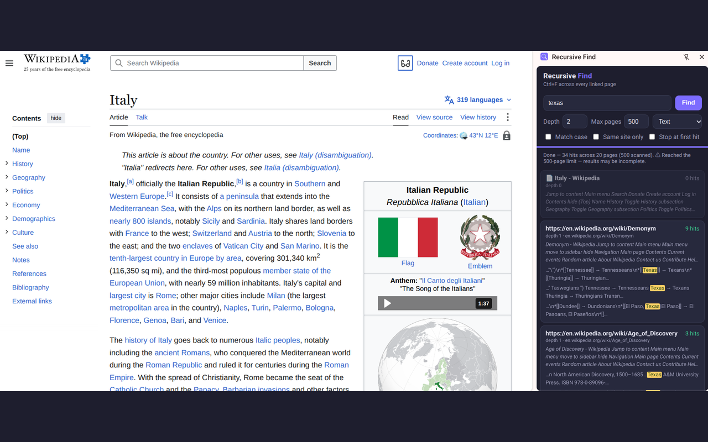

Recursive Find
Ctrl+F, but recursive. A Chrome side-panel extension that searches the page you're on and every page it links to, down to a depth you choose. Results stream in live, sorted by hit count, with a preview of each match. Click one and the page opens scrolled to the highlighted text.
Plain text, whole-word or regex matching, with options for match case, same site only, and stop at the first hit. It's a breadth-first crawl that fetches each page once, strips it to text and runs Knuth–Morris–Pratt search across a pool of Web Workers, so pages are fetched and searched in parallel.
There's also rfind, a headless command-line version packaged as an AI agent skill. One call answers "which pages on this site mention X?" and returns only the matching pages with short snippets, with agent-safe defaults like a page cap and robots.txt support.
Get it on the Chrome Web Store →
